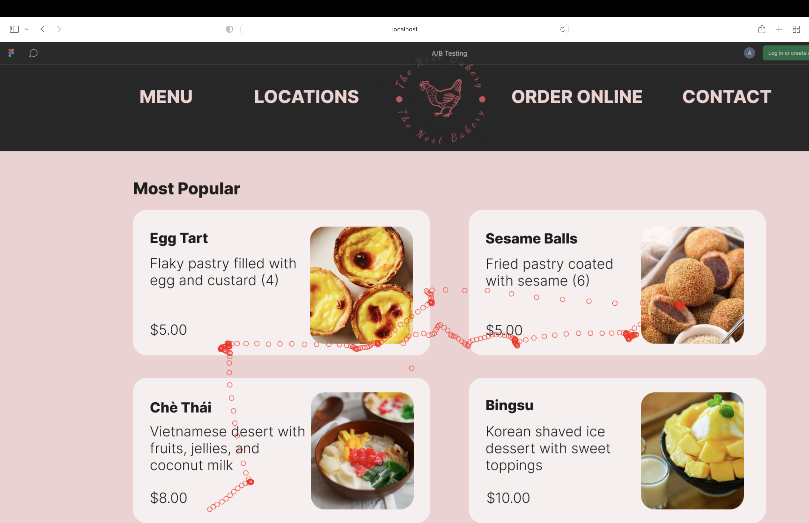
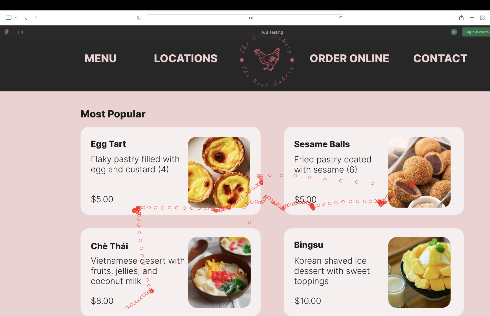

Nest Bakery
Goal: To choose the right dessert!
Context
As a group of four, we used the qualitative process of eye tracking to evaluate the performance of two webpages we designed for Nest Bakery. In these eye tracking tests, we generated heatmaps (which depicted where the users' gazes were fixed while looking at the webpage) and animated replays of the users' gaze motion (that shows what exact interface elements the users were looking at).
Objective
Our aim is to design a webpage that is usable and efficient in guiding the user when purchasing pastries at Nest Bakery through redesigning Nest Bakery's webpage, collecting data, and performing eye tracking tests.
Testing & Considerations
In groups of two, we created redesigns of the original template for the Nest Bakery website.
The original Nest Bakery template:
Our redesigns:
We then performed eye tracking tests with two users, collecting data as users interacted with the two redesigned webpages by purchasing two pastries from Nest Bakery.
Our heatmaps:

Our animated replays (before and after the user's gaze motion):

 

The subjects in our study read the rows horizontally from left to right before reading the columns, focusing more on the menu items rather than the navigation bar. We expected the subjects to focus more on images, but there was more of a focus on text. Despite the first wireframe having more text, subjects focused on text an equal amount for both wireframes.

Final Choice
Thanks to this technology, I chose to pick turtle cheesecake as my dessert. Ribbit!